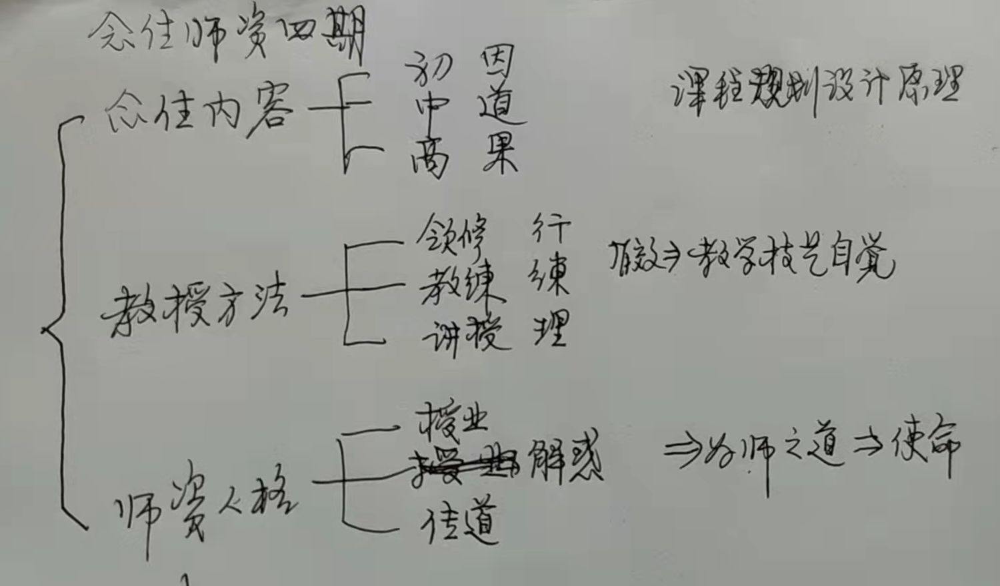

念住师资培养大略
主讲：惟海法师
时间：2021年12月20日
地点：念住初阶预备师资4班
时长：【01:36:37】
一校：ZL
统筹ZL：开场
说明会议的目的：上次惟海法师提到“师资学的东西与学员学的东西是不一样的，师资要理解课程内容为什这样选择，设置为什么定成这样，怎通过念住使人开发进步，教写技艺，为师之道等。我们是一个理想主义的学习群体，希望参加者有内在提升的志趣，因通过内在开发提升主体能力，更好地应对世界和现实人生，提升人生实力。所以，学习主要是一个导向，而不在于给予人什么具体的东西。”我们希望得到进一步的详细具体的开示，所以召开今天的会议。
惟海法师：引言
我工作的时候，没有当老师的正规的培训，也很少有资料。看到师范院校的书，觉得不能解决我们的问题，所以有个探索学习养成打磨的过程。
从在社区上做教学，后来在出家的佛学院做教学，以及现在组织教学工作，我的教学分成了三个阶段：早年在医学院我是教针灸学医学课程，后来出家以后在佛学院教古代汉语，现在讲一些佛法的东西，但是还不算规范的教学。
说到师资养成，一般教学可能需要普及一点，还有我们的价值观，我们的目的论，我们要有意识才行。
整个念住师资组比较活跃，比较自觉，念住开了才一年半，但是学员相对来说发展比较快，师资自助性的成长行为、发心奉献行为都比较典型。
你们到现在师资预备组已经是第4期了，而且总人数还不少。如果按照这个趋势下去，三年之内可能达到二三百人，二三百人即便是有一部分人不实际从事教学，可能能够实际从事教学和具备教学能力、在人格方面能够有所提升、比较优秀一点的，我估计也会超过一百。如果是这样，那么关于念住禅、关于道品的选修方面，这可能成为一个比较大的团体。
虽然说大家发心做师资，但是我内心的一个评判估计，有发心功德心的同时很可能有很强的自我成长的成分在里面。
念住部负责人是HY，事业部。GGD负责教学部。GGD也在禅中心。
觉观部是我们的主打，因为是大乘禅法，是我们首先树立的，也是我们独立开创的。
念住这个项目是释迦摩尼佛开创的传统佛教最基础的项目，祂的知识性、观法以及效应，在佛教的历史上经过2000年，也显得比较成熟和充分。现在学念住的也比较多，我们这里有自己的整理，不能说是发展创新，应该说是有自己的整理和新建构。
我们还开了一个梵呗项目，还有一个经行的项目。这样我们就按照佛教传统的行为体系，身、语、意三业以及主体性心理，这样构成了我们目前开的几个板块。
这个板块开得有点大，开得有点全了，开的多了。我们原来只想做觉观，现在做多了。而且相对来说这几个项目里，对我们来说擅长一点是觉观，念住是非常基础，我们原来没太重视。后来当大家都很努力了过后，我才发现这可能真是大家所需要的，这个出乎我的意料。当做身性化的体育活动，身心亚健康的调理，借助行为进行自我的校正和疗愈。
觉观，主要是经行，经行系统我估计是有较大的价值，所以经行那边也有师资教研队，是WM在负责，我们需要更多更强一些的。梵呗目前是最弱，不仅是我自己在声乐方面毫无基础，我是最没艺术细胞的，同时我们这里人手缺乏，周边没有跟声乐或者声乐辅导有关的人，包括学语言哲学、音乐哲学类的人都缺乏。
这几个项目中相对强一点的目前还是觉观项目。但是目前你们念住部的人比较多，对你们师资的培训，我先说一下我们的内容的问题。
师资培训分成三个内容：

一、念住内容
（一）教学结构
第一个是教学的知识技术的内容板块。这个内容板块学修训练作为师资训练，包括两个方面，第一个是对内容本身要熟悉熟练，第二个要是对课程的规划、课程的设置要理解。就是对课程的理解，由这些内容我们形成教学，比如形成讲义、形成教科书，形成教学内容。那么课程的规划设计有一定的原理，有一定的宗旨，有一定的战略战术技巧，这里面有些规划，所以有要了解的。就是师资，也就是说在学习内容上要比普通学员多一个层次上的不同。普通学员只把这个内容学到、掌握到、会了、消化吸收了、变成自身的存在就可以了。作为师资还要对这个课程的自然逻辑结构；课程规划设计的原理，以及（第三个，就是要）具有前瞻性，把人引到哪个方向去，也是要考虑的，也就是引向功能、引向作用、引向价值，要考虑这些问题。所以在内容上就会分成三个部分，一个是基本内容是必须是要熟练的，第二个要从教学的角度上理解教学设置，第三个部分就是转向应用转向价值，价值也就是说我们做什么事最终是一个目的性的，价值要知道，这是关于内容。
我们念住的内容分为初、中、高，三个阶段。对念住本身有初、中、高级，基本原理就是佛教从教理学上来说，我们的初、中、高级实际上是有个教理结构的，这个结构叫做因道果，因谛是什么，道是什么，果是什么结果。
因是属于基础阶段，主要是学习跟知识性内容有关的。道，是修养修炼的阶段。果是成果、效果。是按照这个次第来的。佛教一直有一些教育体系的逻辑结构、自然结构，祂是符合修道学的原理的。 佛教的修道学，我们一般汉地爱讲教、理、行、果。教是指教道教义，就是以价值观和行为，为所应为，有点像伦理学上讲的为所应为的原理，就是释迦佛师、历代大德或者人文方面教导我们应该怎么做怎么做，这里面背后也有真实原则，也有伦理道德原则，有人性的指引，信仰的指引，这个就是属于“教”。过去不是说“教"(jiao4)，过去是说“教”(jiao1)，说教道或者教诏，这个叫“教”。
第二个理是指原理、逻辑、修炼的路子。
行是指不仅修炼形成功夫，还能够用在日常的身心、行为、生活、工作等现实的场所，使你的行为发生质性的变化。心性有修炼没修炼、有信仰没信仰、有道心没道心，他的行为的内涵不一样。这是教理行果，果是效果、成果，修道的根本转变所称为的道果。是按照这个逻辑来说的。
1)我们的念住内容初级侧重于是基本的念处和念处如实知，也就是在传统佛门里属于念处，就是修和所修炼的对象。
我们一般讲是身、受、心、法。在我们这里来把它调整了一下，分析变成身受法心义，我们对身受法心义要能够准确地把握，一定要达到如实知，达到如实知就会产生我们的认知的可靠性、可观性。要不增不减，要达到无漏，要能够得诸法实相，自身具有如实知如实智，这是初阶的内容。
2)中阶的内容是道，是增上心的修法，也就是按禅定的路线修法，它是真正的不仅是修念住，从念住要上升到修念的本身。念处是所念的对象，就是作业处，念的业处。而中间中阶段是修念身，念的本身。如果是修炼的内容，比如说我要做个好人，这个是内容，这样的念它属于随念的范围。知识内容、人文内容以及行经里概念的内容，这一部分属于所念。念的活动念的行为，心性活动，这属于念本身。然后在念上面修炼就可以形成禅法。一般我们说念住禅念住禅，称之为禅，禅实际上就是心性的修炼，还有对念的修炼，是念住的主要内容，这一部分明确的是修念身，这属于道，就是念住称之为禅、称为禅法的这部分。
3)然后修道到一定的程度会产生某种效应效果，例如心理内容的自我意识，我们把我们的心理内容称之为身受法心义，这本身也是一个逻辑的清理，也是对自己的认识，使我们的知识谱具有结构性。然后你练习了过后，你的念能够从前理性状态变成能够自知自觉，甚至以现量的水平呈现出来，是多数人曾经未到达的。如果修炼得力，能够有所突破，实现一些比较大的根本转变，那我们就会说突破凡圣关，进入修道位，成就圣果，或者说得解脱果。
这就是我们说的高级阶段，高级阶段与解脱门相关。
这是因道果，念住的内容。
初中高三级的学员学的是这些。那么我们学修做师资组，师资组要理解我们的初中高内容它的更深刻的原理是什么。比如说正常情况下我们不告诉学员这是因道果的逻辑，师资组就要告诉是因道果的逻辑。我们的课程设置，对初级学修者我们只是认识自我，中级学修者他们认识是心念心性本身、对心的掌握、心的自觉。把我们的心念活动达到自主掌握的程度，多数人是没有的。比如说很多人会跟着情绪跑，根本就不知道情感情绪仅仅是在对象的水平上，根本就不是人性心理，是动物性心理。可是这个话你对普通的学修者还不能说破，照顾他们的感受性，或者说他们这种比较低级的原始自我意识，或者甚至要照顾他们称之为人性实际上是动物本能，有的时候要照顾。
我们的课程的设置当中，有的比如说我们五念住就跟传统不一样，对普通学员有些也不会讲得太清楚，直接教他内容就行了。对师资，还要考虑为什么、它的逻辑在哪里、原理在哪里。而且作为一个精神文化传统中，每一个创新都面临着巨大的社会压力，我们都要理解它，这个是不一样的。
师资是不一样的，我们会涉及到考虑到心理学的原理，身心活动以及宗教信仰原理。也就是说是人文领域的事，我们作为心理学来学，作为文化来学，作为心理技术来学，以及作为修道学的东西来学，它是不一样的。同样是内容，我们理解的层次会不一样。这是第一个关于内容方法的。
你们这个课程的网课里面还有一个问题，今年春节期间这个课程的开设，我们是执行了一张课程表，课程表在哪里我现在也找不到。课程表是由我、XJ老师和TC老师，我们联合执行的。后来在网上播放的只有我讲的那一方面，所以它就导致了实际上的不完整。把我们原来的教学体系截掉了一部分，就把它原来固有的初阶课程的逻辑给截掉了，变成了一个残缺的，现在已经成这个样子我们还不好说，如果你们师资部起来了以后还要把这个问题校正回来。因为他们想只是听惟海法师的课，没想到我们整个内容实际上执行，因为我精力跟不上，很大程度是XJ老师讲了很多课程，大部分是XJ老师执行，我只是在晚上我们几个人在那里跟他们师资讲课，一个是师资培训课，另外师资课结束以后还有把第二天要上的因为我没办法上让XJ老师去带的这一部分，我们要详细的把第二天的内容、大纲、提纲、内容、怎么讲，都要讲了，她得记下来，然后再回去琢磨，然后第二天讲课。那个时候XJ老师是特别辛苦，每天睡三个小时左右，有时候只有两个小时一个多小时，因为是第一次。如果没有她这样的努力，大家对我的体谅，我们那个念住课就开一次就达到这个水平，实际上是无法实现的。 还有就是我们的经典摘录，很多人都是生手，没有做过文献整理摘录的经验，也对佛法不是很熟。这些资料就创造了基础，同时也不是很完善，今后师资组成立起来了过后，继续完善资料的摘录汇编的工作，这既是我们讲课开辟课程的原始材料、经典依据，也是师资进修提升的基本材料。
所以今后我们的师资需要的教学内容，应该是有三个内容。第一个内容是我们原始讲的记录的整体转录的，这是最基础，这一部分是学员和师资组都要共同学习的。
（二）资料汇编
第二部分是经典摘录汇编，这个是关键的弹药，就是师资组织学习的，早期的师资们还在参与这个工作，形成建构，资料汇编。
（三）讲义撰写
第三个部分就是讲义的撰写，形成标准的讲义。标准的讲义我们希望是开放性地慢慢形成，哪个方面讲得好，就把这一部分整合起来，进行得更完善。这个工作实际上就是一个集智集劳的行为。
再不是个人英雄主义时代的模式，不一样对，这个内容方面大家都要努力，这完成了以后，那么对现在比较流行的特别是南传佛教的念住相比的话，就形成比较大的冲击，形成我们北传中国汉传佛教和中国现代学习释迦摩尼佛的念处，或者说是自我认识体系之一，有一个比较自己的体系，会不一样。而且现在传播的速度很快，如果我们有英语翻译能力比较好的人，有其他外语比较好的人，还可以把它翻译成外语，到国外去传播，有的时候在国外传播比在国内传播还容易。
在内容里面还有一些做事业的做法，以后慢慢说，关于内容我就可以想到这些。
作为师资对内容的掌握要比学员要上行一个层次，层次要提升一些。今天早晨我们这里闭关，闭关的第二个阶段，也就提到说升维的问题，开玩笑说因为北京上海的是平原城市，是二维空间的，重庆是山城，自然是三维的，就是在我们山上来会提升境界，有心性的东西、有精神性的东西、有性命的东西，这个维度越来越高，学习精神文化，学习禅法，学习佛法，特别是我们在这个高山道场上，这绝对是升维的。
我们师资培训的时候，我是希望有一个升维的意识，同样的内容，你知道你跟学员学的是不一样的，我当年为什么有这个意识呢？我在当年读书的时候学生时代，我是搞子午流注的，我很快就发现，我们学习子午流注与普通学生学习课程是不同的，所以到后来进入大学工作以后，虽然没做过师资训练，我的兴趣在琢磨学习内容和作为教学内容的差异在哪里？都是内容，你看着都是那些东西，作为学生学习，那个时候是“学习内容”，作为教师在讲授的时候这个时候内容就变成了“教学内容”。
这两个视角不同，那么它的性质就有差异。所以我们当教师的时候，对这个内容我们是从教学角度上去思考的，这个不同，这个是当师资的时候会注意这一点。因为我想我们这个群里有多少人做师资，过去做过老师没有、做过心理师没有、从事过教育行业没有，我不很清楚，我只是说我的理解，跟大家分享交流，这是关于内容方面。
二、教授方法
第二是教学的方法问题，教授的方法。也分成三目，因为目部最简单的，好记吧。教学教授的方式我们大体上是分成三个层次：
（一）领修
第一个是领修，我们自己基本会，会了过后去带别人，简单地带别人。比如说你是心理师，你去心理辅导，带咨客；或者你是父母，带孩子；或者就在你小圈子里，带他们兄弟姊妹们，去带他们。这个是一个领修，只要你大致会，然后你带他们就可以了，这是一种。
（二）教练
第二种是教练型的。就是这种要基本的训练方案。就是带呢只要有内容熟练就可以，你如果是教练你得有一套训练方案。比如说你当个兵，它有一整套的训练方案。教学是禅修，其实也有，我们山上比较强调方法论，我们有一套训练方案。比如说我们在这里要求每个功课单元要精致地打磨定型，没定型的随意性，我们都严格禁止，要能够定型到自动化以后才允许有一点点的灵活性。如果没有定型就灵活，最后就会不成形，最后成不了气。我们有是这样的要求。
然后我们对每一个学修的内容，我们要很明确它的内容、对应的方法是什么、进行操作、要怎么练、练到达到有身体记忆，就是达到获得俱身智、达到自动化，最后这个心法的东西在身上形成身体化，身体的活动要达到心性化，身心达到一如化，从而形成体认，一直到唤醒。最起码比如说我们身体的唤醒，如果是心灵的唤醒就是属于开悟了。
这些要通过你的反复的练习，我们练还不只是练一个内容，我们会多个内容之间进行组合，比如说三个一组、或者四个一组、或者五个一组，我们练习的时候采取的策略是这样的，第一天ABC重复，每天ABC重复，重复4~6次，然后第二天就是BCD第二天重复4~6次，第三天我们就是CDE重复4~6次，我们这样成组滚动着向前、辗转向前推进，形成修炼，乃至形成我们生活作息，乃至工作模式，比如读书或者做什么事儿的节奏。
由于节奏，每个单元内部具有同构性，我们有节奏的重复的时候，它就会形成在四维，在时间意义上，因为有了时间性嘛，就会形成共振。它这个共振是有时间的，就会形成像声韵的共振一样的共振，以及在时间的延续过程中的共振，就形成曲调旋律一样的模式，这个基础上就会形成延绵相续，这种相续的过程中就形成螺旋式的向前推进，这种推进就会形成我们说的音域上的乐曲，在行为上我们就形成是陀罗尼。陀罗尼那么就会使这个行为者本身获得高度的稳定性。
所以它就自然这种规律感，这种规律怎么利用陀罗尼的原理，我们有规律性的操作，就反复要打磨单元结构，打磨具体内容训练，训练成这个方案一组一组的组合。若干个学习内容一直在下去、在增长，像猴子掰包谷一样，前面新进了一个，后面的丢掉一个，每次都有个主练习。也就像我们在过去学生时代学习压力大一定要采取学习策略，而且每一天总学习的内容为核心，然后结束的时候预习明天的内容。开始之前复习前一天的内容，前一天的内容复习衔接到今天正式学习的内容，今天学习为主，结束的时候预习明天。
每天都采取这种方式这样辗转向前推动，这样我们就不至于学了的东西当天就忘了，我们每一个内容至少会重复3天，在7天到4天范围内简单地复习一次，一个月内再复习一次，三个月内再复习一次。所以我们那个年代读书是怎么呢，平时不玩，休息。大考大耍，小考小耍，不考不耍，平时我们都不玩，一到了考试了，不上课了，我们就翻墙出去看电影去了，半夜出来爬楼，但是虽然考试不一定好，这种方式它让我们掌握得好，如果是禅修祂有本质性地修炼、训练，就必须要内化，甚至功夫上升转化成自身的存在，而不是获得一个知识性的概念、背书。如果学禅修你说背书有啥意义呢，跟我没有本质性的价值、实际的利益啊。
所以训练方案就显得特别重要，实践领域要去教别人，首先是说带人，这个是常识，会基本内容就行。你要当教练，你就要有训练方案，就是说带人只要自己会就能带，在行为层面上。要当教练，你真的要带人练，就要有训练方案的意识。
所以你们每一个当老师的要有训练方案，我估计你们有一些是心理师，因为过去我是搞心理学的，跟我学的心理师比较多，其中有一部分是不爱动的人，我就很怀疑他能不能当好心理师。因为目前来说这个行为心理的矫正力量是很大的，一个普通的小问题，搞心理疗愈其实你不用怎么疗愈、说什么大道理，把他放出去在野外大家集体玩几次，可能就好掉一半。
那么我们作为专业性的禅法，你去带人学修、转化，这就是属于专业性，祂跟业余性的不一样，必须要有严谨的训练。从内容到方法到技术以及训练方案本身，都要严格，逻辑要琢磨。我希望我们的师资队伍从你们开始就要传下去，我们念住师资有一套养成的办法，而其中就有一个训练，有专门有训练方案的在高级阶段，这是中级做教练。
（三）高级讲师
高级阶段是做高级讲师，做教授的阶段。高级讲师要有方法论训练，要懂得原理、方法，与一般的研究能力，作为高级教授的研究，你自己要有深刻的研究，甚至要有独到的发现。在修道领域，一般是要求有自证，同时也要有学术研究能力。你有自证，用经验材料说话，自己有一些根本的转变，才能变成真正的内行。
心性领域一天没有泡，你就不是真内行，也就是说一天没有现证，你就在概念里做游戏，就像六祖所讲，转法华和被法华转，你是开悟证道了呢，你就能转法华能转经，否则你就被经所转。
这就是说我们高级讲师教授级的，不仅在于学术领域知识方面掌控，他更重要的是有现证的，在禅宗的意义上叫做教和宗打通，教宗打通就是说实证和知识原理完全打通在心性的修炼实证上他是内行。教上是说在知识在原理上是通达的，它的实际实证和知识原理完全打通，这才是教宗兼通，这个要求很高，所以师资有压力，从普通的领修员到教练当高级讲师教授，是很不容易，是一个系列，所以是跟我们当老师的指明的方向，阶梯怎么提升。这个提升首先到高级阶段要有实证基础。
我们作为教师，我在这里写了一个东西，最简单的我们的教学有个分级，那么我们的教学要有效，我们的教学的效果要好，教书育人要会教把别人教会，这是最基本的。
但是作为教师师资训练，只是有教会别人的意识是不够，还要有教学技艺的自觉性。我们要有教学技艺，我们随时要意识到自己在教，你教的是什么，我们还不是教机器，训化机器，我们训化的是个人，教的是人，我们在跟人打交道，所以我们不只把内容交给别人，还存在着一个东西叫做什么呢，教学关系，教学关系明白吗？我们教自身教学的方法技术和内容是一种关系，我们跟学习者，所学的内容是一重关系，我们教学方法教学内容之间是一重关系，还有我们教学者和学习者是一重关系，这样就会构成复杂的多重的教学关系。
你可以用4个单元的组成，可以用各三变成9个排列组合的这种关系，通过这种排列会强化我们对教学的认识，理性分析分析得更细，同时我们就要学习一些教学的技术，还有学习教学的艺术，关键是要打造技术艺术的自觉性。
就说教学的技术可能大家比较好理解，搞教学多年的人说不清什么是教学艺术。我教了很多年书，大概第6年上我才搞明白怎么是教学艺术。所谓教学艺术是什么？艺术是什么涉及到对艺术的艺术，艺术就是对表现形式的形成美感，不仅自己能够欣赏，而且能够带动别人参与者欣赏，就是美的欣赏是由欣赏者和被欣赏者、就是创造者和欣赏者一起共同创造美。所以美不只是你画家艺术家的自身的事儿，好的艺术家，他不仅创造出作品，这个作品还要能够把前三者带引进来，一起共同创造美，美不只是属于创作者的，就是要通过欣赏者美才能够最终实现。
所以说教学的过程中，我们你说艺术是什么艺术，最通俗最简单的讲，那就是我们要把内容应用于人性，心性。因为人是学修者，我们跟人打交道，人在学，人是有心性的人、有人性的人、有精神属性的人、特别是学精神文化，它往往是精神成长都比较高于一定精神境界的人，有价值观的人有，追求的人，甚至有道德情结、修道情结的人、向道的人、有根源性探索，有本体性追寻的人，比如说在心理学上经常会出现对存在、自我这些方面有探索的人。
那么我们在进行教学的时候，要考虑到接受者、被教学者，他对这些心性、人格性、精神性的特征，有应于这些特征进行施教，我们是顺应他的动物属性、感受性，还是顺应于他的精神属性、顺应于它的阳光性，还是顺应于它的阴暗性？顺应于他的领悟能力，精神性的领悟能力，还是顺应于他的一般性的客观，这里面是有分析的。
我们应于他们受众的高级属性，发挥他们的高级属性，所以我们的内容的选择上，在这施教的方式上，以及在启发的方式上，特别是在启发他们回到自身身上发现他自己。好的老师不教人家任何东西，只让他们自身激发出。所以好的老师跟心理治疗是一样的，最好的治疗病人都是自己好的，他自己没进入之前你的整个引导过程都没有任何治疗作用，但是当有心理问题的咨客他自己进入到开始的时候，你的任务就完成了。所以好的心理治疗师最多是个诱导师，因为治疗是他（咨客）自己完成的，所以最好的治疗师从来没治疗过，好的老师也从来不是教别人的，没什么东西可以授受，我一个宝贝给你了没那回事，包括方法也是要启示他自己去发现方法，方法他自己出发出了，如果你的学生每次来都是说这个老师没教过什么，我只不过在他那里突然自己就会了，那么就说明你这个老师是最好的老师，让人没有老师感无形的老师，每个人都觉得我很聪明我很能干是我自己会的，那么你就是好老师。
所以你要把这个人变得是作为一个自己的探索者，自己的方法掌握，发现自己，自己自悟自证者，那就是最好的教学因素。
教学不光是教内容的问题，教学还有好多事情，有一个长时间的养成的过程，慢慢的学，随着经验的增长会越来越圆熟，而且这东西没有现成的东西让你一下子就掌握，哎我这一次经过师资培训我就会了，不可能，有可能你一辈子都学不好，你每天都在进步但是一辈子你都不会就近完成，会出现这样一个情况。
就是说我们所谓学习教授教学的方法，它确实是我们一个自身的成长，一个好的老师，有方法教学技艺的意识，是自身能力的提升成长，也是人的自我完成的一部分、自我开发的一部分。
这就比较有意思了，当老师你就会当出味来了。这是从教学说的，我在这儿大部分当老师吧，就这些体会，因为我自己得到的教育不良，所以我就有点沮丧。所以关于教学的问题，我思考得比较多，那时候学习出来，包括出家闭关了过后，希望懂一点教育的事，过去不懂教育有点遗憾，我就成箱成箱地买一些教育方面的书，特别是高等教育的书，可能大概读过几箱吧，我有一次就买了4箱，有些现在都忘了。
三、师资人格
第三个方面就是我们师资培训，要培训师资人格，这是人格的养成，这个很重要。因为师资一定要有人格，我们基本来讲好像说传道授业解惑。
（一）授业
其中第一就是授业，教人知识教人技能，这是最基础的。所以一般让别人获得内容这是业的部分，最基础的部分。无论是知识性的内容还是技能性的内容，你给对方会点什么东西，这是最基础的，这是我们当老师的第一个，一般来说这一部分首先是让人活得见识、阳光、能力，要有这个意识，因为要使人得到提升、形成他自己的能力才行。
（二）解惑
第二个方面我们说解惑，在学习佛法方面的解惑，它也不是一般的知识性的解惑概念性的解惑。我们要让他越过概念，回到心性本身，回到事实里。
注意到我们涉及的禅法和佛法的东西，我们所使用的一些术语，虽然还经常口头上称为概念，但是事实上它们都不是概念，也不是定义的方式去说。凡是在佛法上经常问你什么该怎么定义这个人无疑就是个书呆子，说得好听点是个书呆子说得不好听就是外行，为什么这样说？修练，修是修本身，学佛法学心理学它也是为了实际的目的，而不是为了获得概念性的知识掉书袋子。概念名词它是假名，它在中介领域，在信息领域里，在符号领域里。它不是本质领域，你是要到达本质。
所以我们的所说的东西不是定义不是概念，而是什么呢？而是陈述！记住我们所讲的一切是陈述，期我们只是陈述事实不是定义事实，事实是不被人定义的。你说我这一支笔，这支笔是被你定义的？它笔就是笔，我只不过是陈述这只笔，仅此而已。无论我们是以判断的模式，还是陈述句的模式，还是问号的模式，还是反问的模式，还是用命令句的模式跟你说的，或者是起始句的模式，或者表达一个模态句模式，表达我自己的看法，这个时候我都是说的是事实本身。我现在我希望你们学好，希望你们学好这个时候都是讲的事实，我真诚的愿望和愿望的最终具体内容是什么。这个不是被定义的，所以不要动辄就去搬这个形式逻辑概念逻辑，掉书袋子，显得自己有学问。我就遇到有这个年轻人有发现“我就跟你讲这个定义是什么，你学过定义吗？”我一听真可爱，太可爱，很聪明的可爱，那种智商蛮高，学位蛮高。我们年轻的时候也有过掉书袋子的年代，因为什么呢？一个是自信心不足，自己年轻嘛，所以就要引经据典来证明自己，表示自己说的话是有信度的，这是自信心不足的表现。
后来过了两年我觉得很无聊，我管它什么年轻老啊，管他什么会多少知识，你跟我学东西学具体的东西，我帮你带进去，这个才是过硬的。
我们授业解惑，你带人进去，不是带着概念性的理解，要带人在事实上的发现、触法。比如说让人会了，我经常讲的一句话是“禅法上我们不说你懂不懂，不讲懂不懂，我们只说你会不会”，你会了自然懂，你如果不会你的懂就是假的懂，是概念上懂，是概念循环，概念性的理解，它无助于事实的到达，你心性不到达。
所以我们说解惑不是在知识上去解惑，形成概念的逻辑循环，达到所谓的理解。而是说你是会了，真会了这个东西经验材料上，这个时候你自然知道自然明白，你自然领悟自然理解。所以说在禅法上的会在心法上的会，任何会一点都不是一般知识性的解惑，而是本质性的破获，突破以后。也就是说他做的每一个新的经验的获得都等于是一场小开悟，因为你的心直接地达到，不论是你的身体达到心理达到，比如说经行是身达到心达到，身心同时达到。你的心法上，比如说我们说你的判断功能，你的再证智功能，你的理解功能，你的领悟功能，你的悟性，普通的认知性的悟性和精神性的领悟。要到了，跟你讲什么概念都不要，你也会；没到，你能说会道还是不会。
所以我们说那个解惑啊，人生之大惑有哪些主要是，本体上的疑惑，比如说关于什么是自我？人生究竟有什么意义？人有没有存在？比如说我们这一次闭关的5个，都是属于存在病，他的主体存在方面有问题，有的还是存在的方面的欠缺，不说是存在的虚无，反正是出了问题。而有的人偏执，就是自我执着，它也是属于主体方面的心念的问题。有的人对内这个自体有绝对的疑惑、本体论的疑惑、性命方面的疑惑，他就有本体的追寻，就形成了求道，接触道都是这样的。它跟具体的哪个宗教没关系，它是超宗教的。
所以我们说解惑，在修道领域里，在心理学领域，在人文领域，真正的解惑跟在客观知识世界的解惑不太一样。所以这个要你怎么把他带到最大的大惑，就比如说“未生之人我是谁，即死之后谁是我”，这些性命，什么叫做性命？什么叫命？什么叫运？什么叫业力？你的境遇有的时候不幸的时候你经常思考命运是什么。人生下来有一个自我的认知发达，精神发达，精神成长段位比较高你都会有本体论的追寻。这个你自己要去追寻，也要引导别人追寻，还要防止出偏差。
所以这个事儿不是小事儿，附带的这个方面就比较细，比如说就关于疑惑，分为五住地惑，我们去引导别人的时候都要有这个意识，所以在禅法的解惑，跟普通的学校的教学的解惑有很大的不同。如果我们学禅学、学禅法、学佛法，他都会面临着许多人就是有本体的追求或者说自我方面出现了疑惑，他才来追寻。
所以这种人的人格，你会发现他们也聪明，他们也擅长，即便是他们找不到因缘，但是他们还是表现得正向性阳光性，这挺好的，学禅法的人平均素质比较高，地层的就明显道德法制水平比较低。所以我们面临着这些，要跟他们一起有一个，他们在精神的路上走得更高走得更远，首先对问题通过内源性的开发使他们成长。这其实是个大事，其实价值也很大，这个是我们所谓的灵魂工程师，一个真正的是正知的，这是第一第二。
（三）传道
第三就是我们说师资，就是有一个传道的，所以心性的东西、生命的东西、性命的东西，就是具有道德品质，信仰的东西有道德性，精神的东西都有道德性质。我们四川话读“道德(di3)”性质，普通话把这三个字的音混淆了，四川话是分得很清楚的。“道德(di3)”性质，因为它有道，我们在教他们的时候不仅仅是教一个知识一个技术，还传递的是道德精神。
这个道是什么？应该说清楚的说，规律是道，原则是道，精神原则是道，性命是道，你对性命的追寻、本体的追寻是道。你在这个基础上形成充分的发展开发，形成独立的精神人格的生命意志，这都是道德范围。
但是真正的道不是成了什么，而是你的追寻的过程中而形成一个大的准则，而且与天道自然是相应的，天道到最终是关于通感的，这些东西就是谓之道。我们当老师还有个为师之道，尤其教别人要遵循一定的能力规范。
这里如果你们有心理咨询师的话，我要说一下精神分析中有些问题。我看到了有些精神分析师的传记提到有些精神分析师和资客之间的咨询关系出现了一些违背伦理超越伦理方面的事情，而提倡精神问题的有些方法，比如说我们心理咨询，不说精神分析，只说方法而已，免得说我是攻击他们。有些心理治疗过分的鼓励人的幻想、自由联想，这个人都有妄想缺陷躁狂倾向，你还要叫他去自由联想，你负责不负责？叫人去感受带人感受，可是这个女同胞本来是有情感问题，你还叫她去感受，不去感受她都已经烦恼不堪，再去感受，越陷越深，根本就摆拔不出来，只有强化她的烦恼。所以感受性是陷阱，有的人叫你一点都不思考跟着感受，舒服就好了，然后啥都没有思考然后长期这样舒服舒服，然后退化，精神退化，他没得精神分裂，可是精神性退行了，就好像得了十年精神分裂症似的。精神分裂后遗症，一看就是这个，高级精神机能退行。我们就看到这里就有一个，我们做老师，师道，你引导人，你就要有知识这个最基础，要真实可靠，从佛教的来说，真谛。你要有真实可靠性，一定在有了真的基础上才能往上说，这是道德属性，伦理属性，这个要把准，正向积极的引发人，正向积极的引导，在精神境界的体行方面去引导，不要变成了陷阱。
明确的讲，做师资，自己要有对自己的人格要有要求，你在教别人的时候咱先要教自己。你教的东西能够打动你自己，你教的东西你自己要信你，教的东西你自己能够尽到，而且能够在行，自己也在坚持，否则你就没有力量。
同时你在教别人的时候，给他人建议，让别人发展更充分，而且痛苦可以减轻可以解除，帮助别人的慈悲心，但是有整个社会的责任感，比如说是这个社会心理光明智慧多一点，黑暗阴影少一点，也使精神文化的传统发扬光大，整个中国文化、中华文明、发扬光大，乃至人类的人文精神发扬光大。有一个比较高的志向理想。虽然我们是现实的人、物质的人、肉体的人，但是我们的精神在天上，高高在上啊，比神还高啊。
人的精神是比神还高大的，成神如果没有这种觉悟自我领悟你还是处于一种原始物理的，你还得要有实现人的自我觉醒，而且明白了过后，你领悟了开悟了达到人的自觉，人的自我的唤醒，人的自觉，生命的唤醒，生命的自觉。
你还，不是说明白了过后你就更幸福了，不是。你明白了过后可能更痛苦，因为你还得接受，这就是你的智慧开启了你就会知道的更多更广，就是你的痛苦你的烦恼跟普通的情感判断不一样，而是更深刻更高档的，更痛苦烦恼。因为你有原则，你遭受的坎坷挫折可能还更多，可是你还得要坚守下去，知道吧？所以你越明白你越活更辛苦，你越醒来越发现这个世界上都是糊涂的人多，做事荒唐的人多，你还不能说他们都不好。所以你还得无怨无悔，你不能“我是满世皆醉闻唯我独醒”，你还不能这样说。所以你要醒着，你还要无怨无悔。
所以当老师，不说当精神导师，就说我们自己达到自身的觉醒、性命的开发，自己精神境界的提升，自我的觉醒，一旦实现过后，其实你会活得更辛苦。所以有的时候我们看诗经，就是羡慕草木无觉无知。所以有的时候你说活得那么辛苦还不如糊里糊涂就过一生啊，会有这样。可是人之为人，人的生命的发展就是越来越明白，人的尊严也在这里，人就是一个智慧的人、精神的人，有人性有精神的人，有德性的人，就要追求的是崇高、圣洁、自我觉醒还不糊涂，就是这样的。所以佛比神高，而人呢每一个人自身的觉醒在这种情况下你自然而然你会发起大悲心，经历了洞深，你尽管自己活得苦，可是你得处处要给别人光。
所以说当师资，真正是发心学习，当道心的师资，当禅法的师资，真的走向正行之路，会很辛苦，这个愿很大，可能这一辈子要学习的事，不是仅仅学习教几堂课、带几个人那么简单。 所以当老师，只是为了教别人，其实是在教的过程中更好的提升自己，这是教学相长，教的过程中会发现，把别人教会的作用只有3成，7成是作用在自己本身上。所以教就会自己开发自己成长，当师资是自己成就的捷径。 希望大家努力，感谢大家的发心，我也很高兴，希望师资的培训的方式更成熟起来，我们的控制方法论，大家都注意方法，你们的方法论意识培养起来以后，慢慢积累，积累我们这个念住师资养成的内容成规范化，就以后学习起来就更容易，养成的人就更多。祝福你们，感谢。
提问：课程内容和学习安排
学委LJ问：1.课程视频内容，55期。2.每天学习时间。 惟海法师：师资，我们的学员的升级的层级递进的逻辑是这样：先作为学员学习，学习了以后进入增益班学习，也是复习强化，把那些内容用到日常的身心活动和生活工作中去，争取习以成性，增益强化，就是一个强化的，不能说学了就了了，要让功夫上升并且用得上，这是增益的学习。
在增益学习的基础上，有主动性发心的人就向师资方向去努力，因为师资方面肯定造诣要深一些对不对？所以就大体上按照这三个级别，三个层次：普通学员争；增益班练习者，他就有修行的倾向了；然后教学教师资，能够带别人学修，一般有发心的取向。分这么三个级。
刚刚开始就不要求尽善尽美，只要往前努力，建构性的发展对不对？那树也是一天天长大，你的人也是自然成长的，不是开始就设计一个理想模式，你生下来就是一个圣人了，不可能的，自然成长。自然成长就不完美之处，但是我们知道怎么最好，就向那个方向慢慢努力。
第二个课程的内容，21和55的问题，只要把原来的教学课程表还原，把XJ老师的那一部分捡出来，按课程表怎么编排一下。按我的逻辑，应该说按照整体的教学结构，把我的和XJ老师讲的一堂课一堂课在序列上重新恢复一下就可以了。
班委LJ：他们应该是都编好了的，而且有标题前面是什么内容，然后讲的什么，应该都是已经编好了。 惟海法师：不管他编不编好，作为你们师资班要考虑的就是，看他逻辑对不对？恢复了逻辑就对。
GGD：今年是4期班，我们刚刚把55期视频，按照现场的一节课一节课的先后顺序还原出来，就是目前大家才能看到的是一个完整的视频，包括早课晚课所有的课，视频已经做到了。但是文字稿只有之前网课的文字稿，然后其他的课程等于是所有人都是第一次看见，我们还没有进行整理。关于学修的方案，这些都是之前大家各个班级的探索方案。今天师傅开示了很多内容，具体的学习方案，怎么个学法，可能还要跟班委或者班级发挥自己智慧去想怎么去做，并没有说一个固定的方案给到大家，可能还有一部分探索的工作要做。
惟海法师：你的方案已经不错了，用你那个方案为基础，那个起点已经很高了。再往上搞几轮的话就很不错了，你现在很有口碑。下一个我说转录问题，大部分原来都转录过，你们这一届我是建议，就是建议你们商量一下：梳理逻辑，制作意脉树枝图，这个就叫意脉树枝图，出自于明朝，这样可以简单的制作，不要用专业软件，用符号表，用符号来制作很方便，它主要有个好处，就是在任何的软件上都不丢，不挑软件，也就是它具有最大通用性。这个表我是用建议用制表符去做。经过我的手段，我自己做的全都是用的制表符，你就可以在txt文档上面用，这个很重要。你们如果解决不了，就在自己的输入法上，把制表符选出来，定义人工定义一下，就可以轻易敲写出来打出来键盘上，或者是查表的方式查一排，然后复制待用也可以。这样做出来那个数字图，关键是随便任何文件格式上都不丢，不要任何专业软件有这个好处。我是说你们以梳理逻辑，因为你们是要进行逻辑建构为主要内容。因为原始的转录大部分以前都已经做过了，你只有通过逻辑的梳理才发现哪个地方讲得清晰，哪个地方还有缺陷，所以主要是做这个工作，我觉得比较轻松了。就说你是接着前面的人做，而不是每一次来都重新做，就从前面的人来做，他就会继续向前，不断的提升，不断的成熟，形成积累效应。这就是我经常来强调的开放性建构。
学委LJ：但是自己做的和别人做，记忆深刻和理解是不一样的。 惟海法师：你这是从自我学习的角度上说的话，我们是说作为一个师资，你们师资班一个组来集体工作来说的，视角不同。还有一个时间问题，你们每次安排的是45分钟到一个小时，但是我是提倡跟我们学的人每个人都要有健康的心理、健康的人格、健康的生活习惯，有自己的健全的家庭和工作事业，正常人，正常人生。那么必然就忙了，很多事情，家里的事情要做，自己的学修要做，师资要做，工作要做，那么这个时间就要安排得结构更好，就必须要学会时间管理。时间管理意味着实际上是对你的生命管理。所以45~60分钟可能对有一部分人，一般来说我希望45分钟为标准，±5分钟。通常35分钟以下效果还不够，但是55分钟以上可能很多人时间不够。照顾一下时间，我只是建议45分钟左右。还有，如果是师资的自我养成训练，你们可以设置成早晨，比如说早晨尽可能起早，用15分钟左右活动，15分钟左右学修，如果说共修尽量把时间控制到25分钟以内，这样就可以逼迫我们高效地学习，现在要训练高效学习，晚上可以用5分钟到10分钟来练习，睡前洗好了，准备上床睡觉了，在入睡之前练一会儿5分钟到10分钟。
中午我们一般不提倡用睡眠把觉性的生物节律打乱，造成亚健康。所以我们中午不主张入睡，但是主张是什么？带着有觉性有足够觉醒度的心灵的栖止栖息，清醒的养觉性，那么中午就就可以休个5分钟或者休个15分钟左右。
你记住每一堂的短功课，有在工作有事业的人都很忙，那么我们把这种修行变成修炼与心灵的七养同一的一个活动，从而使我们的生命使用得更合理，更高效，时间利用得更充分，能够兼顾更多一点。所以就要求我们的高级学员，比如说闭关，我们的闭关其实你学啥内容我不管的，也只训练你的方法，天天给你唠叨方法，我每天晚上看4个小时的日志，每天要4个小时，我现在老了阅读能力慢了字也慢，一般都要4个半小时，所以你看今天晚上我可能就睡不成，都是这样的。训练方法唠叨唠叨，因为你的方法自觉唤醒，成为独立的一个功能模块，脑子里形成一个独立的功能模块，跟工作内容可以鲜明的独立出来，你才能够形成你的能力。现在人们的工作负荷、学习负荷、信息负荷那么大，你可以把自己的能力培养出来，怎么能够成为精英，怎么能够成为高级人才，修禅法的人大半都是精英，即便还没成精英也在成精英的路上。所以就得要养成他们的方法，学禅的人不轻松，很辛苦，不是舒服，更辛苦，你就必须要有方法要高效。
我们很多人来闭关是糊里糊涂的，来我们就给他三天朗读，集体朗读，一个观察他的行为和人格，一方面就是给他闭关扫盲。所以他们有的人说我本来想来休息休息闭关，但是一来整得比比家庭辛苦多了，都是这样的，要学知识学方法是根据，你们要有一个明确的目标，师资组不仅要懂内容，要懂教学，要脑子里还要建立起方法的模块。你脑子里，就像学语言，汉语语言里没有给助词，没有词头词尾变化，脑子里有词头词尾变化的功能模块，有的语言是有语格的，有语格的语言随便怎么颠倒次序都能够懂好懂，但是成熟的语格的脑子里有个语格的功能模块。
我们学习禅法对人高级知识分子的方法论训练，精英要有方法意识，在脑子里形成方法的专门功能模块。我们采取的方式是通过内容学习催生模块的诞生，也就是借助具体的知识和技能的训练而形成功能性的单元，我讲清楚没有？我不知道。
所以说要辛苦，我觉得你们进这个有点上当，可能有的人没想到会有这么苛刻的东西，但是你看看，你能够坚持两三年搞过来，你可能马上就发现别人跟你这个距离就会有点大。
一个是内在的修为会使你与普通人的距离拉大，第二个你的方法论训练、方法论知觉比别人拉大。第三个，基于心性修行基础上展开的高级人心的展现，德行的展现可以使你得到提升，也会比普通人有点距离拉大。所以你们现在也跳到这个坑里来了。好勒，那就这样。